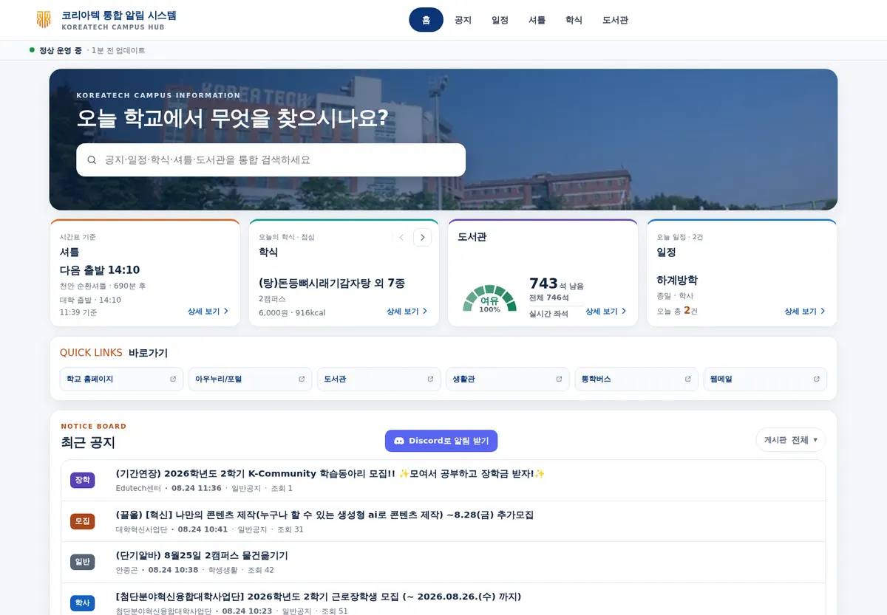
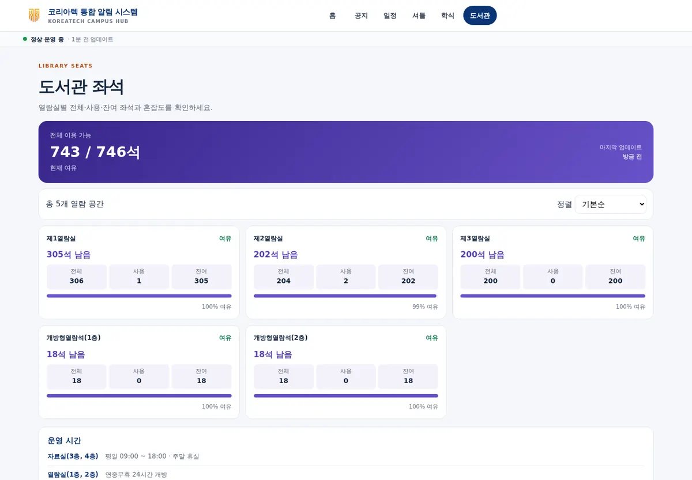
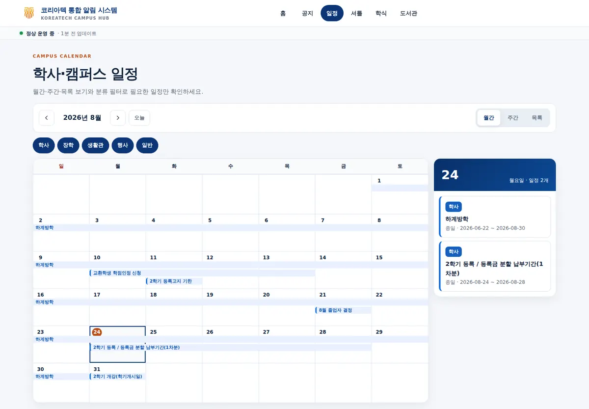
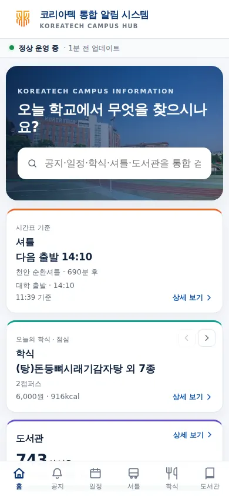

프로젝트 개요
한국기술교육대학교(KOREATECH)를 위한 통합 알림 시스템입니다. 포털·생활관 공지, 사용자별 암호화 메일 연결, 도서관 좌석·셔틀 위치와 시간표·학식 메뉴를 하나의 디스코드 구독·조회 경험으로 묶었습니다. v0.20 개발 계열에서는 저장소 계약과 선택형 SQLite 백엔드도 도입했으며 운영 기본값은 계속 JSON으로 유지합니다.
주요 기능 / 내용
- 실시간 감지: 빠른 체크(기본 60초) + 전체 크롤링(기본 30분) 이중 주기 — 포털·생활관 게시판 순회, 한 게시판 실패 시 건너뛰고 계속
- 디스코드 봇: /공지(드롭다운·페이지·임베드), 키워드 검색, 버튼식 통합 관리자 패널(/관리자 — 상태·수동 크롤링·재시작·Pi 화면/LED 조작·종료)
- 통합 구독(/구독·/내알림) — 공지·셔틀 도착/좌석·학식·도서관·메일 알림의 등록·수정·해제, 요일 차단과 전체 일시정지
- 사용자별 메일 알림(IMAP) — 암호화한 각자의 아우누리 계정으로 신규 수신·발신·수신확인을 감시해 개인 DM 전송
- 캠퍼스 통합 조회(/조회) — 도서관 좌석, 셔틀 실시간 운행·잔여 좌석·노선 지도·공식 시간표, 복사하기 쉬운 학식 메뉴
- 사용자용 읽기 전용 웹 대시보드(/web) + Cloudflare Quick Tunnel 외부 공개(선택)
- 일정 파싱(날짜·시간·장소·카테고리) + 로컬 LLM(Ollama) 보조 분석(선택)
- PySide6 GUI 대시보드 + 라즈베리파이: GPIO RGB LED 상태 표시, 7인치 터치 Pi 모드, systemd 자동 실행, 릴리즈 자동 업데이트
- repository 기반 JSON 원자 저장·자동 아카이브, v0.20 alpha의 선택형 SQLite 무손실 마이그레이션·내보내기·검증 백업
- Storage/Outbox 관측성(v0.20.0-alpha.5) — pending/claimed/dead-letter, lease age, DB/WAL 상태를 JSON·SQLite 권위 backend에서 실시간으로 읽어 관리자 디스코드 상태와 JSON 진단 CLI로 확인
검증된 화면
2026년 8월 24~25일 Cloudflare Quick Tunnel로 공개 중인 읽기 전용 웹 대시보드를 실제 접속해 캡처했습니다.





나의 역할
1인 개발
- 기획
- 크롤러·파서 개발
- 디스코드 봇·FastAPI 개발
- GUI·라즈베리파이 연동
- QA & 디버깅